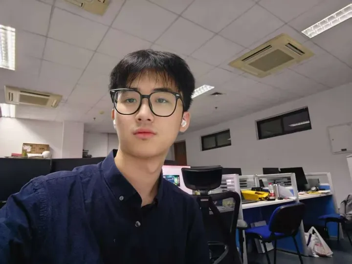
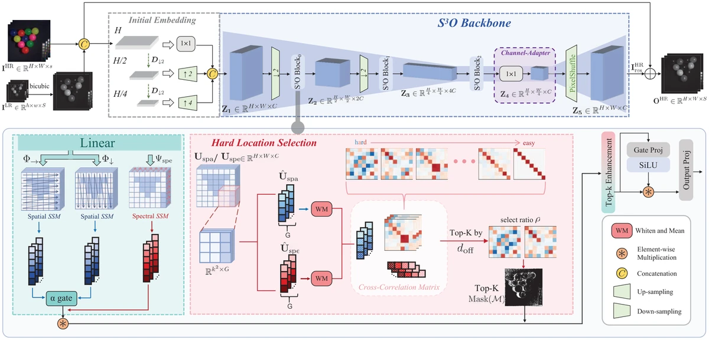
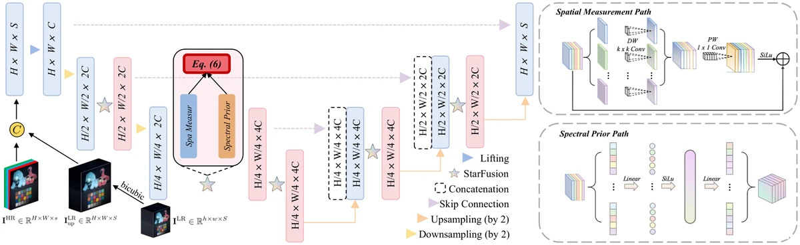
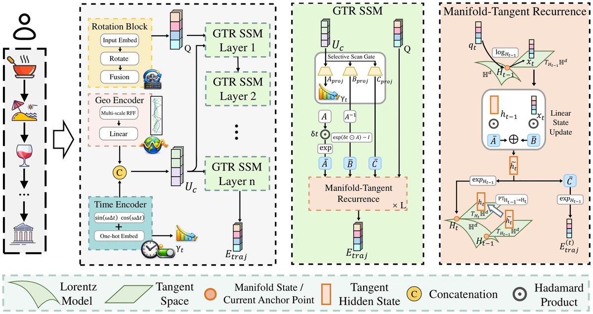
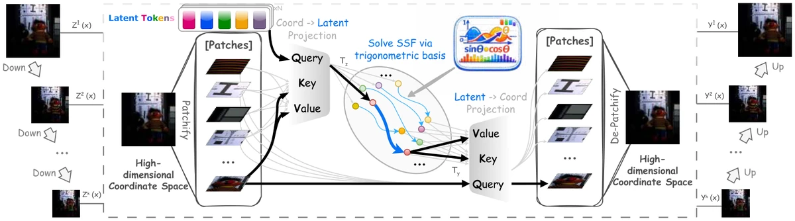
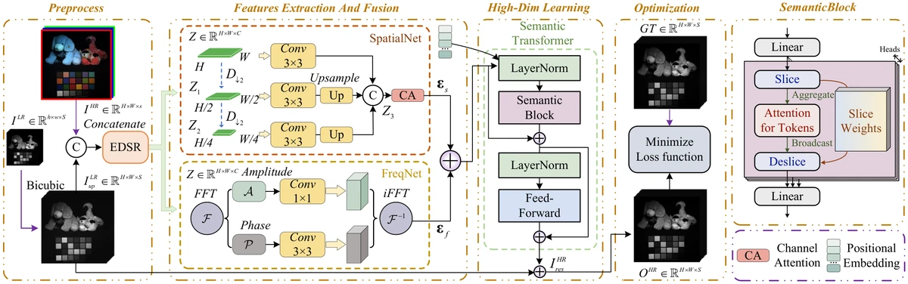
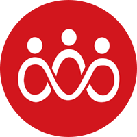

Jieyuan Pei, Zhuoxuan Li, Wei Li, Haobo Zhang, Jiawei Jiang, Jianwei Zheng
Lorentz-distance attention for multiscale near–far interactions in PDE surrogates, evaluated on six standard benchmarks and two unstructured-mesh CFD tasks.

B.Eng. Intelligent Science & Technology
Zhejiang University of Technology · expected June 2027
Research intern · AIR, Tsinghua University
AI research intern · Hithink RoyalFlush
Contactpeijieyuan@zjut.edu.cn
Neural operators for PDEs, and spatial–spectral fusion for hyperspectral and remote-sensing imaging, built to transfer across scales, meshes and degradations.
World models for end-to-end driving: predicting how a scene unfolds, and scoring candidate trajectories with it.
Vision–language–action policies and multimodal LLMs, including memory for long-horizon robot tasks.
Jieyuan Pei, Zhuoxuan Li, Wei Li, Haobo Zhang, Jiawei Jiang, Jianwei Zheng
Lorentz-distance attention for multiscale near–far interactions in PDE surrogates, evaluated on six standard benchmarks and two unstructured-mesh CFD tasks.

S3O: Selective Spatial–Spectral Operator for Cross-Scale Fusion
Jieyuan Pei*, Wei Li*, Zhuoxuan Li, Junwei Zhu, Meiyi Lu, Jiawei Jiang, Chenyu Wang, Jianwei Zheng
0.3–1.4 dB gains on three datasets at up to 4× lower compute than heavy Transformer / Mamba baselines.

Asymmetric StarFus: Learning Incoherent Measurements for Semantics-Aware Spatial–Spectral Fusion
Jieyuan Pei, Wei Li, Zhuoxuan Li, Junwei Zhu, Chuangjie Fang, Jianwei Zheng

GTR-Mamba: Geometry-to-Tangent Routing Mamba for Hyperbolic POI Recommendation
Zhuoxuan Li*, Jieyuan Pei*, Tangwei Ye, Zhongyuan Lai, Zihan Liu, Fengyuan Xu, Qi Zhang, Liang Hu

Solving Spatial–Spectral Fusion with Latent Spectral Operators
Wei Li, Jieyuan Pei, Junnan Xu, Xuanfeng Ding, Junwei Zhu, Wanjun Chen, Jianwei Zheng
+0.160 PSNR on CAVE ×4/×8 with 4.4% / 6.9% SAM reduction.

S2TA-Fuse: Semantic-Superpixel Tokenized Attention for Spatial–Spectral Fusion
Jiawei Jiang*, Wei Li*, Jieyuan Pei, Junwei Zhu, Honghui Xu, Yuchao Feng, Jianwei Zheng
Mag-Mamba: Modeling Coupled Spatiotemporal Asymmetry for POI Recommendation
Zhuoxuan Li*, Tangwei Ye*, Jieyuan Pei, Haina Liang, Zhongyuan Lai, Zihan Liu, Yiming Wu, Qi Zhang, Liang Hu
RoboMemArena: A Comprehensive and Challenging Robotic Memory Benchmark
Huashuo Lei*, Wenxuan Song*, Huarui Zhang, Jieyuan Pei, Jiayi Chen, Haodong Yan, Han Zhao, Pengxiang Ding, Zhipeng Zhang, Lida Huang, Donglin Wang, Yan Wang, Haoang Li
26 tasks, 2,600 demonstrations, 2.8M frames; mean trajectory 1,076 steps.
AI Research Intern
Hithink RoyalFlush Information Network Co., Ltd.
NLP/LLM systems and robotics-related research and engineering.
Research Intern
Institute for AI Industry Research (AIR), Tsinghua University
World models for autonomous driving, and an embodied-AI memory benchmark for long-horizon robot tasks.
National First Prize
National Undergraduate Intelligent Car Race
2025

National Second Prize
National Undergraduate Electronic Design Contest
2025
National First Prize
China Robot Competition & RoboCup China
2024
Python / PyTorch · C/C++ · ROS · embedded systems · PCB design · mechanical CAD